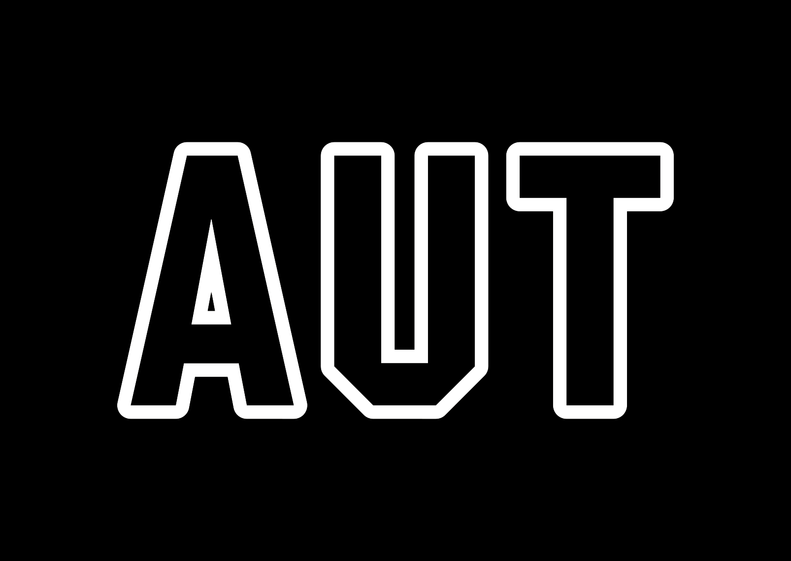

About
Research & Upskilling
Planning & Control
Communication & Teamwork
Development & Quality Assurance
Appendix
Planning and Control
Project Proposal ver.1
Project Proposal ver.2
Project Proposal ver.3
Project Proposal ver.4
Project Proposal Feedback: must download to view feedback
Mid-project Review ver.1
Mid-project Review ver.2
Mid-project Review Powerpoint
Mid-project Review Feedback
Mid-project Feedback Summary
Charter
Communications Management Plan ver.1
Milestone Report ver.1
Milestone Report ver.2
Milestone Report ver.3
Risk Register ver.1
Quality Assurance Plan ver.1
Requirements Matrix ver.1
Schedule ver.1
Schedule ver.2
Scope Statement ver.1
Scope Statement ver.2
Skills Analysis ver.1
Sprint 1 Burndown Chart
Sprint 2 Burndown Chart
Sprint Schedule
Testing Plan
Algorithm Design and Network Layer Diagram
Upskilling Schedule ver.1
Upskilling Schedule ver.2
Work Breakdown Structure ver.1
Work Breakdown Structure ver.2
Work Breakdown Structure ver.3
Rationale for GitHub
Rationale for Web Application
Rationale for Change to Kanban
Rationale for JavaScript
Rationale for Machine Learning
Rationale for Scrum and Trello
Rationale for Frontend Change